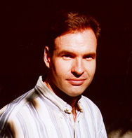

http://mml.music.utexas.edu/dwh
hains@mail.utexas.edu
David W. Hainsworth holds degrees from Berklee College of Music (BM) and The
University of Massachusetts (MM), and is currently a doctoral student in music
composition at The University of Texas at Austin. His primary composition
teachers have been Robert Stern, Russell Pinkston, Karl Korte, and Dan Welcher.
Mr. Hainsworth's compositions have recognized by the Cinquième Prix International
Noroit De Musique Acousmatic, Bourges, the First International Computer Music
Competition "Pierre Schaeffer", the 20th Concorso Internazionale Luigi Russolo,
SEAMUS, the Korean Electro-Acoustic Music Society, the Eighth Biennial Festival
of New Music, Imagine 97, ResFest, the Aspen Music Festival, and the 32nd Royal
Musical Association Research Students' Conference. Mr. Hainsworth is currently
director of the Music Microcomputer Lab at the University of Texas at Austin.
David W. Hainsworth
1170 B San Bernard St.
Austin, TX 78702